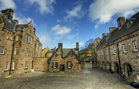
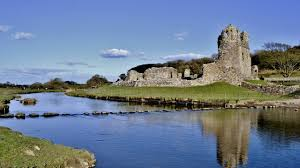
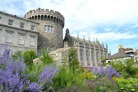
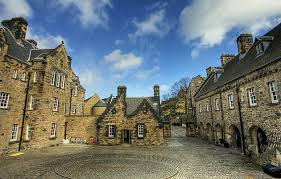
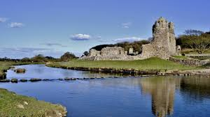
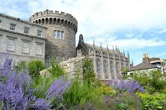

UK
When I graduated high school my parents asked what I wanted for a graduation present. Of course I had to pick the most expensive thing I could thing of, a two week tour of the United Kingdoms. I have always wanted to travel to where my anscestry led back to and so we went. First, we landed in London, but didn't stay long. We quickly made our way up to York, but only for a few sights before traveling even further north closer to where I wanted to go the most, Scotland. We arrived in Edinburgh after a relatively short train ride, where we saw Edinburgh Castle and the wonderful city below. After a few days there we made our way over to Glasgow, for a bit of RandR and some serious eating. Afterwards we started the part of the journey I had looked forward to the most, Ireland. I remember taking the ferry over and immediately drove down the countryside to Dublin. In Dublin we stayed for the majority of our trip, but it was not the end. During the last three nights we stayed in a BandB just outside the city, which was a perfect way to end our adventure.
 




